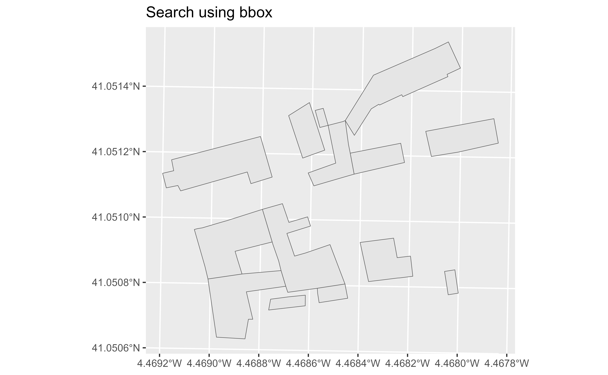

Get the spatial data of buildings. The WFS Service allows to perform two types of queries:
By bounding box: Implemented on catr_wfs_get_buildings_bbox().
Extract objects included on the bounding box provided. See Details.
By cadastral reference: Implemented on catr_wfs_get_buildings_rc().
Extract objects of specific cadastral references.
catr_wfs_get_buildings_bbox(x, what = "building", srs, verbose = FALSE)
catr_wfs_get_buildings_rc(rc, what = "building", srs = NULL, verbose = FALSE)See Details. It could be:
A numeric vector of length 4 with the coordinates that defines
the bounding box: c(xmin, ymin, xmax, ymax)
A sf/sfc object, as provided by the sf package.
Information to load. It could be:
"building" for buildings.
"buildingpart" for parts of a building.
"other" for others elements, as swimming pools, etc.
SRS/CRS to use on the query. To check the admitted values check
catr_srs_values, specifically the wfs_service column. See Details.
Logical, displays information. Useful for debugging,
default is FALSE.
The cadastral reference to be extracted.
A sf object.
When x is a numeric vector, make sure that the srs matches the
coordinate values. Additionally, when the srs correspond to a geographic
reference system (4326, 4258), the function queries the bounding box on
EPSG:3857 - Web Mercator, to overcome
a potential bug on the API side. The result is provided always in the SRS
provided in srs.
When x is a sf object, the value srs is ignored. The query is
performed using EPSG:3857 (Web Mercator) and the
spatial object is projected back to the SRS of the initial object.
The API service is limited to a bounding box of 4km2 and a maximum of 5.000 elements.
INSPIRE API functions:
catr_atom_get_address(),
catr_atom_get_address_db_all(),
catr_atom_get_buildings(),
catr_atom_get_buildings_db_all(),
catr_atom_get_parcels(),
catr_atom_get_parcels_db_all(),
catr_wfs_get_address_bbox(),
catr_wfs_get_parcels_bbox(),
catr_wms_get_layer()
Other INSPIRE WFS services:
catr_srs_values,
catr_wfs_get_address_bbox(),
catr_wfs_get_parcels_bbox()
Other buildings:
catr_atom_get_buildings(),
catr_atom_get_buildings_db_all()
Other spatial:
catr_atom_get_address(),
catr_atom_get_buildings(),
catr_atom_get_parcels(),
catr_wfs_get_address_bbox(),
catr_wfs_get_parcels_bbox(),
catr_wms_get_layer()
# \donttest{
# Using bbox
building <- catr_wfs_get_buildings_bbox(
c(
376550,
4545424,
376600,
4545474
),
srs = 25830
)
library(ggplot2)
ggplot(building) +
geom_sf() +
labs(title = "Search using bbox")

# Using rc
rc <- catr_wfs_get_buildings_rc("6656601UL7465N")
library(ggplot2)
ggplot(rc) +
geom_sf() +
labs(title = "Search using rc")
# }
Site built with pkgdown 2.0.8.
Template rostemplate by dieghernan, based on Bootstrapious.